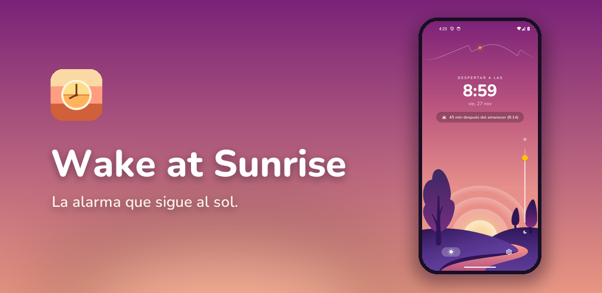
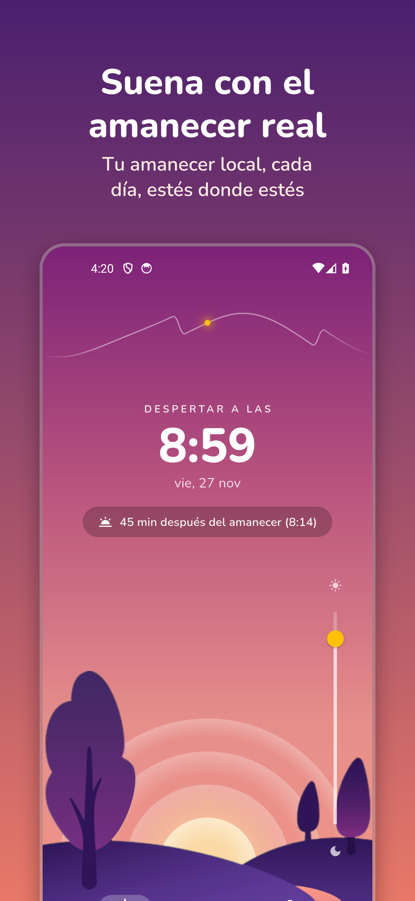
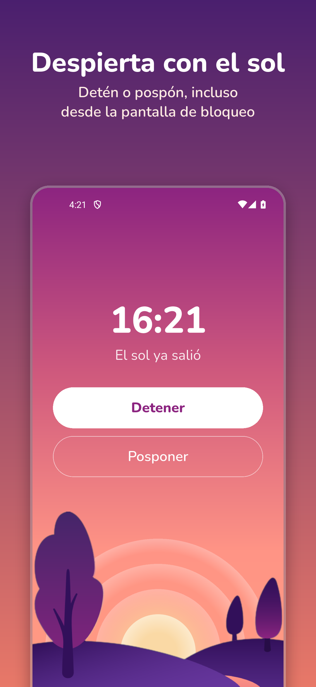
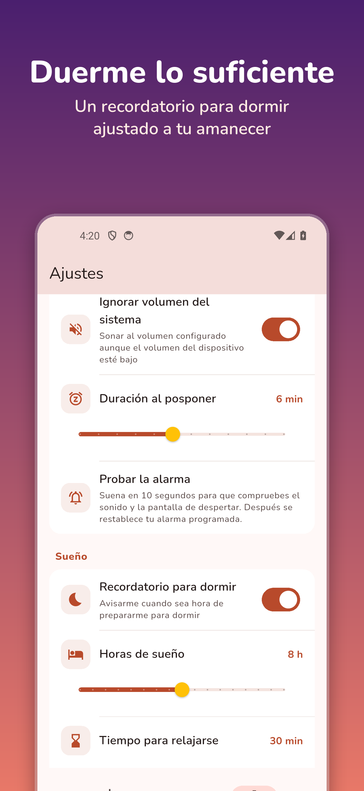

Kit de prensa
Actualizado el 18 de noviembre de 2026 ·
Wake at Sunrise es un despertador para Android que suena con el amanecer real del lugar donde estás, calculado en el propio teléfono, y que se desplaza con él uno o dos minutos al día a lo largo de las estaciones y al cambiar de zona horaria. Cada usuario elige despertarse al amanecer o los minutos que quiera antes o después. Es gratis, con un Premium opcional que añade sonidos suaves para despertar y recordatorios para dormir; no requiere cuenta, no tiene anuncios y la ubicación nunca sale del dispositivo. Lo desarrolla un desarrollador independiente.
| Nombre | Wake at Sunrise |
|---|---|
| Desarrollador | Desarrollador independiente |
| Plataforma | Android 7.0 o posterior · iOS en desarrollo |
| Lanzamiento | 16 de noviembre de 2026, en Google Play |
| Precio | Gratis · Premium opcional, anual o pago único de por vida |
| Idiomas | Inglés, portugués (Brasil), alemán, sueco, noruego, danés, finés, neerlandés, español, ruso |
| Privacidad | Sin cuenta, sin anuncios, sin rastreo; el amanecer se calcula en el dispositivo |
Disponible enGoogle Play
Próximamente en elApp Store
Imágenes









Enlaces
Contacto
Para entrevistas, códigos para reseñas o cualquier otra cosa, escribe al correo del desarrollador.